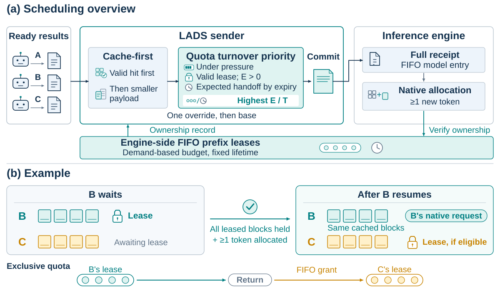
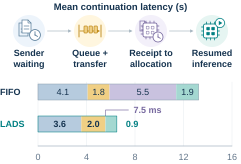

LADS
Lease-Aware Delivery Scheduling of Tool Results for Language Model Agents
Submitted to WWW 2027
arXiv submitted


I investigate how concurrent language-model agents share a constrained tool-result return path and reusable inference state. LADS coordinates result delivery with cache protection to reduce the time needed to complete multi-step agent workflows.
My work includes the scheduling system, a real-inference prototype, and controlled and Web-derived workload evaluation.
44.6% lower latencycontrolled bursty tool returns · 5 input seeds
42.4% lower latencyWeb-derived burst replay · 3 input seeds
Mean complete-workflow latency relative to ReAct with first-in, first-out (FIFO) tool-result delivery in the reported burst workloads, using the same model and agent policy.
Submitted to The Web Conference (WWW) 2027.